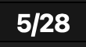
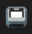
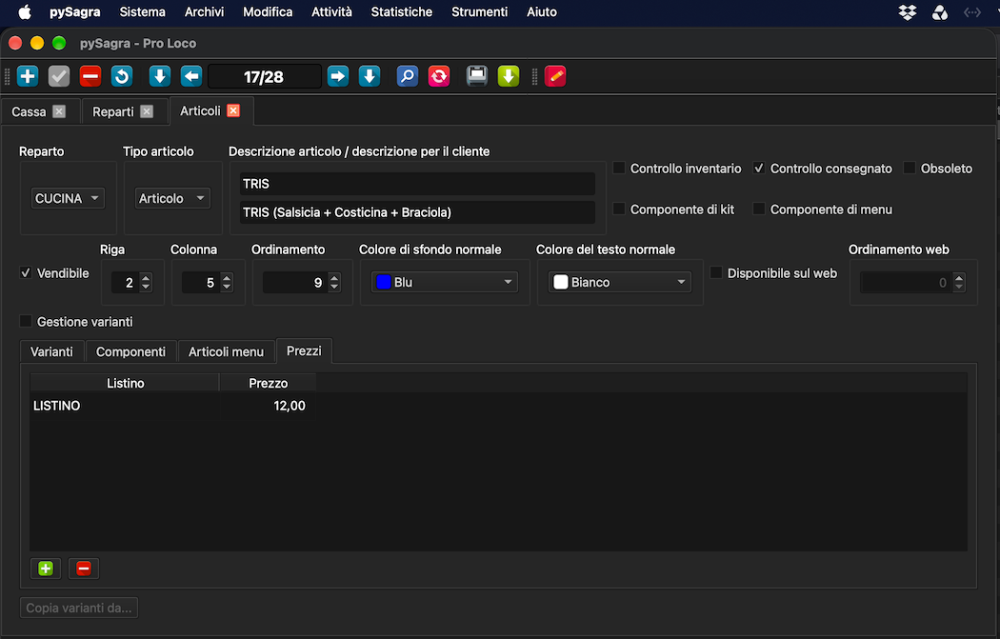
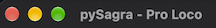
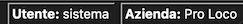
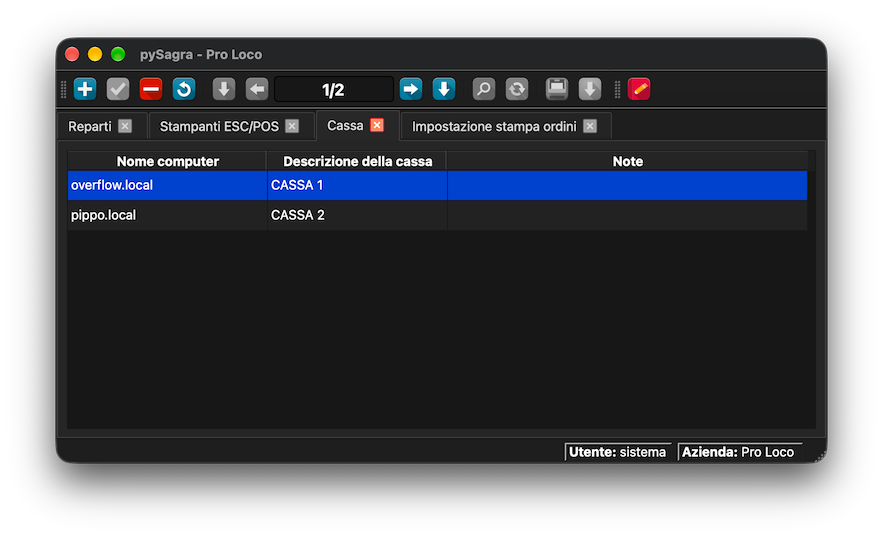
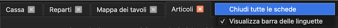
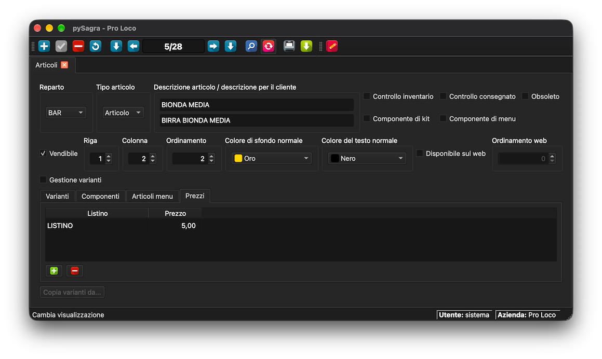
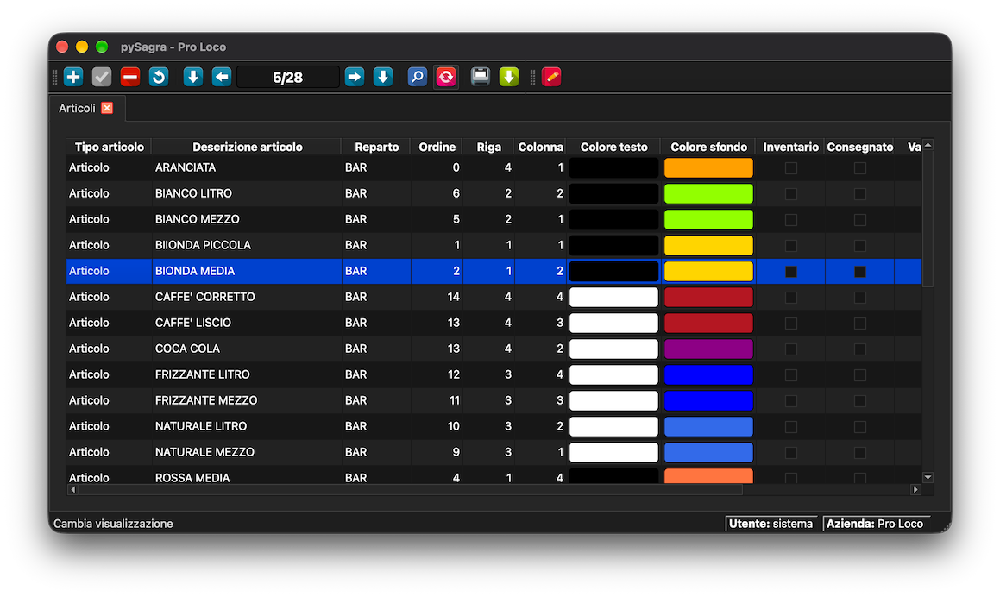
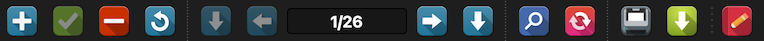

L'intefacia utente di pySagra è quella di una tipica applicazione desktop La finestra principale del programma è composta da:

Il menu segue le specifiche richieste dalla piattaforma utilizzata. In MacOS la prima voce, dopo il menu Mela, è costituita dal nome dell'applicazione, seguono i menu specifici dell'applicazione e comunque il sistema operativo aggiunge voci in base a proprie regole. In Windows il menu è quello previsto dall'applicazione, si parte da Sistema. I menu richiamano azioni che consentono ad esempio di aggiungere schede o aprire altre finestre.
La barra del titolo riporta la descrizione dell'applicazione e dell'azienda sulla quale si sta lavorando

La barra di stato in basso a destra riporta il codice utente attualmente connesso e la descrizione dell'azienda in uso

La finestra principale è un contenitore di schede che viene popolato da azioni richiamate dai menu. Ad esempio il menu Archivi → Cassa, Archivi → Reparti, Archivi → Articoli aprono la gestione di questi archivi in schede specifiche. Le schede si possono spostare a destra o sinistra a proprio piacimento semplicemente trascinandole con il puntatore del mouse. Tramite menu è anche possibile richiamare delle finestre di dialogo, ad esempio Archivi → Impostazioni oppure Strumenti → Strumento di copia.

Tramite menu contestuale è possibile nascondere la barra delle schede o chiuderle tutte in blocco

Alcune schede prevedono due tipi di visualizzazione:
Tramite un'azione specifica Cambia visualizzazione, disponibile nel menu Modifica e nella toolbar Modifica, è possibile passare da una visualizzazione all'altra.
Ad esempio per l'anagrafica articoli è disponibile la vista a modulo:

Stesse informazioni ma con vista a griglia:

Le toolbar consentono di richiamare velocemente alcune azioni dei menu.

Sono fornite due toolbar predefinite:
| Pulsante | Funzione | Note |
|---|---|---|
| Inserire un nuovo record | Si disattiva quando ci sono modifiche in corso | |
| Salvare le modifiche | Si attiva dopo un nuovo inserimento o modifica dei dati | |
| Cancella il record corrente | Si disattiva se c'è un nuovo inserimento o modifica non ancora salvati | |
| Annulla / ricarica | Sempre disponibile | |
| Primo record | Si disattiva quando c'è un solo record o siamo già al primo elemento | |
| Record precedente | Si disattiva quando c'è un solo record o siamo già al primo elemento | |
 |
Contatore | Visualizza il numero del record corrente ed il totale dei record. Assume un contorno rosso se non sono considerati tutti i record dell'archivio |
| Record successivo | Si disattiva quando c'è un solo record o siamo già sul ultimo elemento | |
|
Ultimo record | Si disattiva quando c'è un solo record o siamo già sul ultimo elemento |
| Filtro e ordinamento | Consente di modificare le impostazioni di filtro e ordinamento correnti | |
| Cambia vista | Consente di passare alla visualizzazione a modulo oppure a griglia | |
 |
Stampa | Genera un anteprima/stampa/PDF in base ad un report |
| Esporta | Viene generato un file in formato CSV dei dati dell'archivio |
| Pulsante | Funzione | Note |
|---|---|---|
| Inserimento ordini | Apre la dialog di inserimento ordini |
Alla toolbar di Accesso rapido si possono aggiungere operazioni da Sistema → Toolbar
Tastiera su macOS: per raggiungere con il tasto Tab anche i pulsanti, compresi quelli dei messaggi di conferma, va attivata la Navigazione da tastiera in Impostazioni di Sistema → Tastiera; altrimenti i pulsanti si possono usare solo con il mouse. Su Windows e Linux non serve.